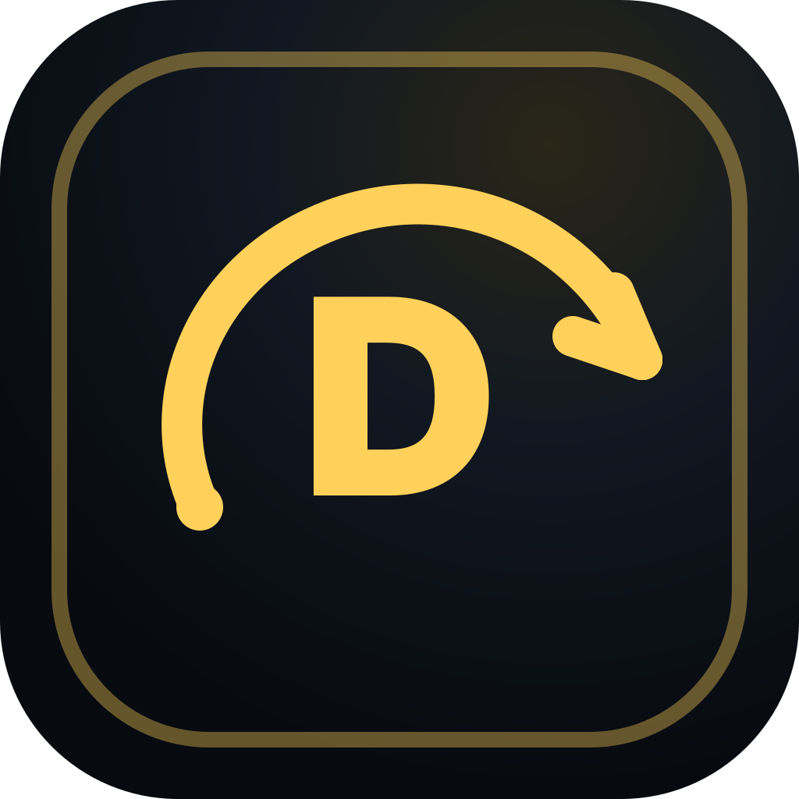
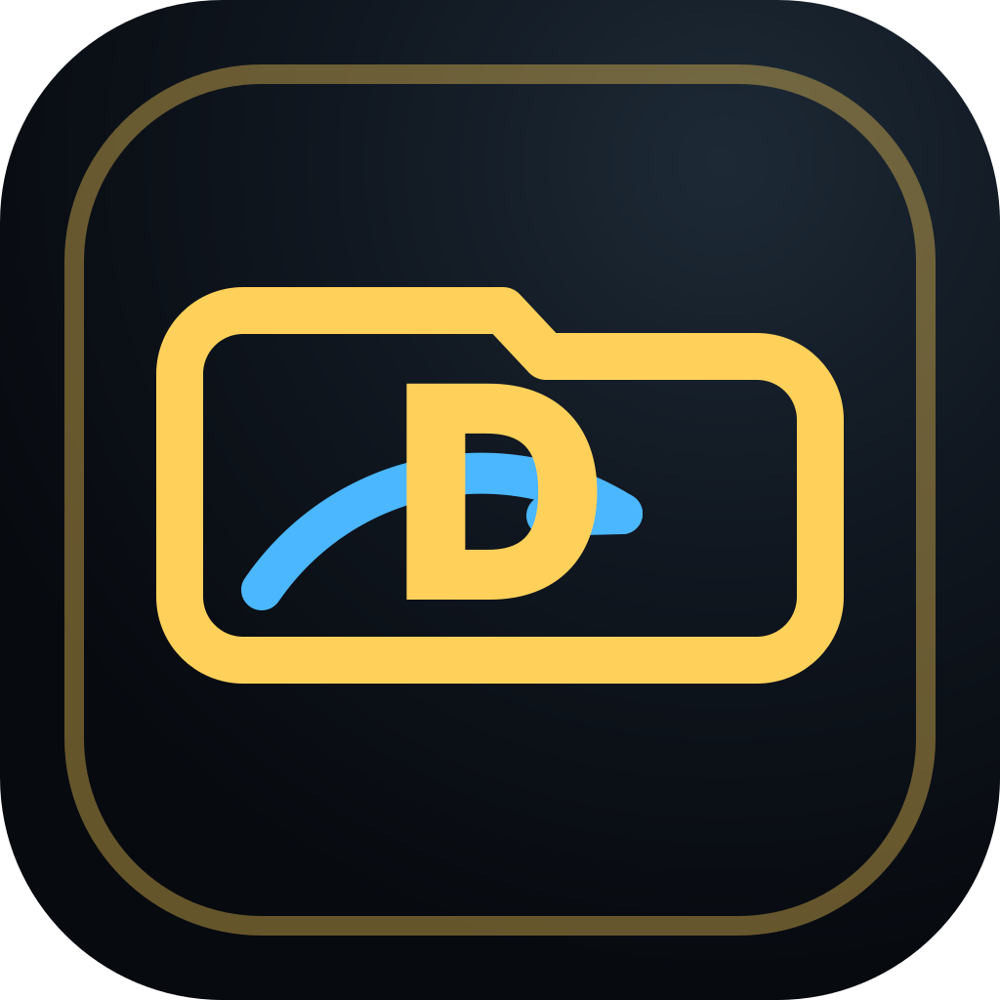
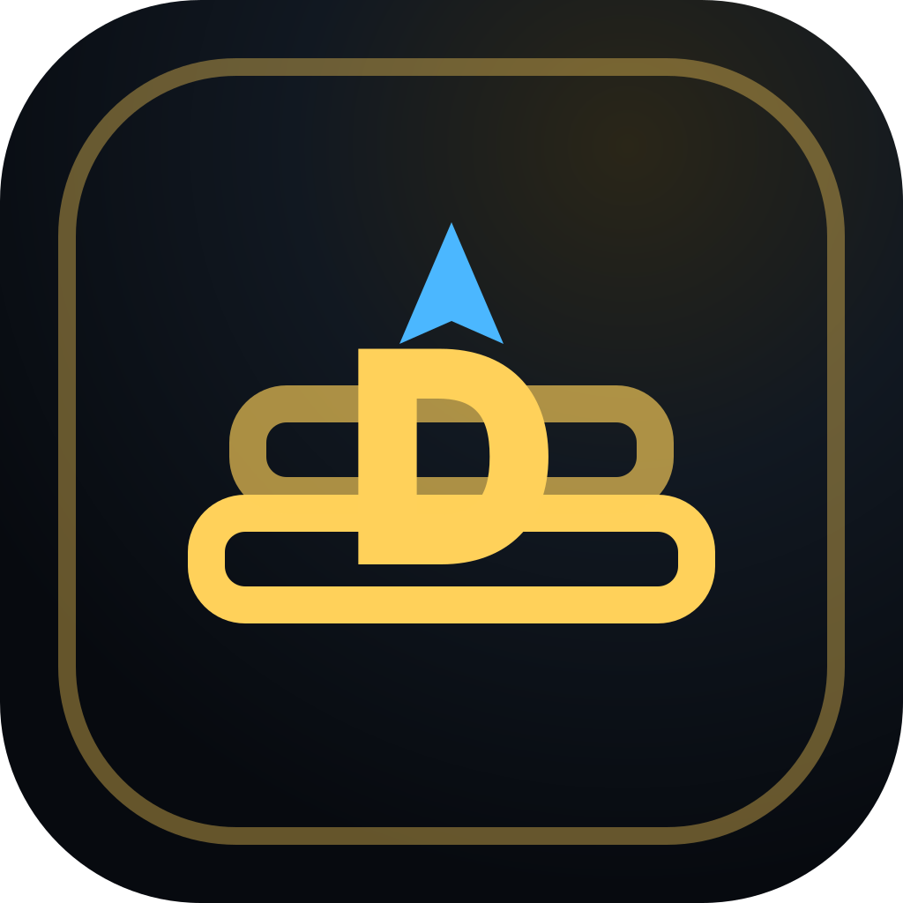
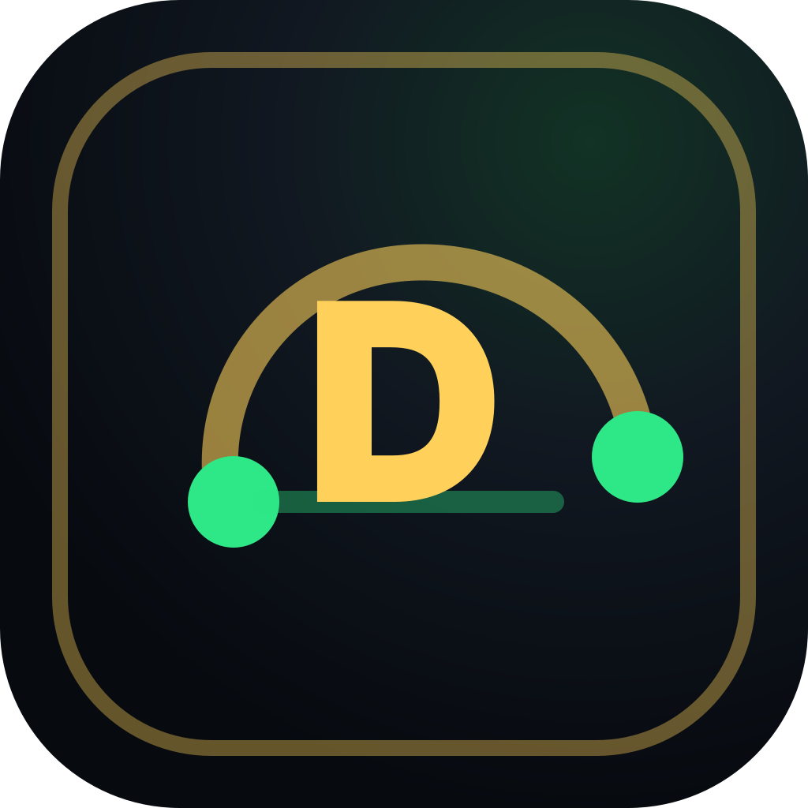
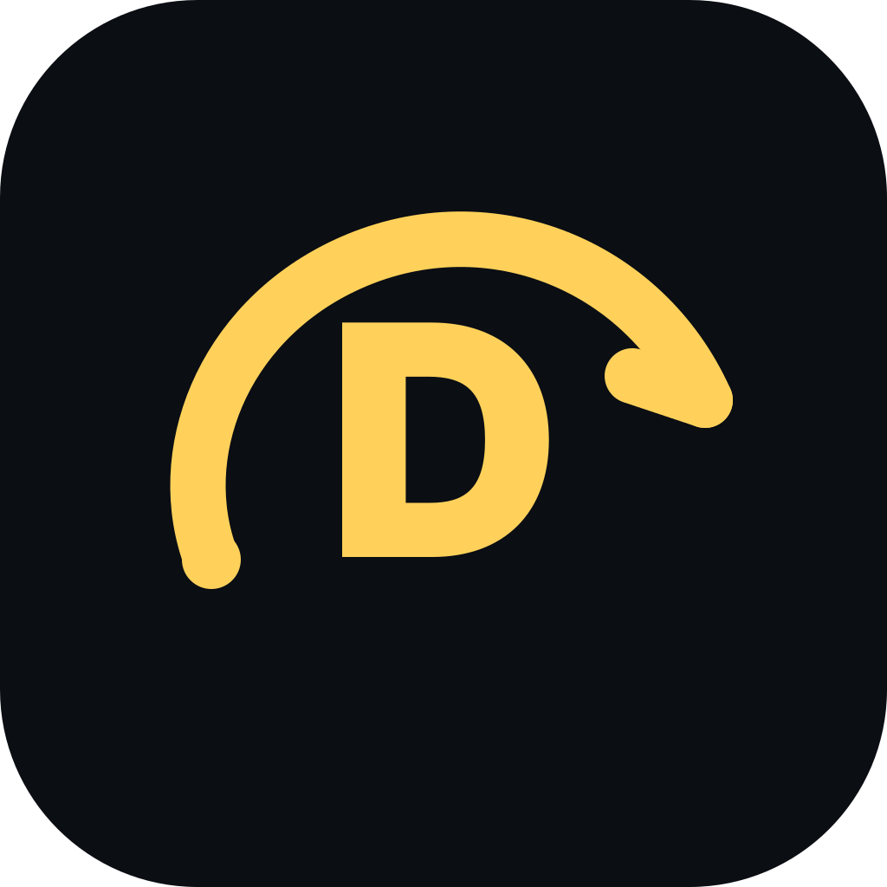
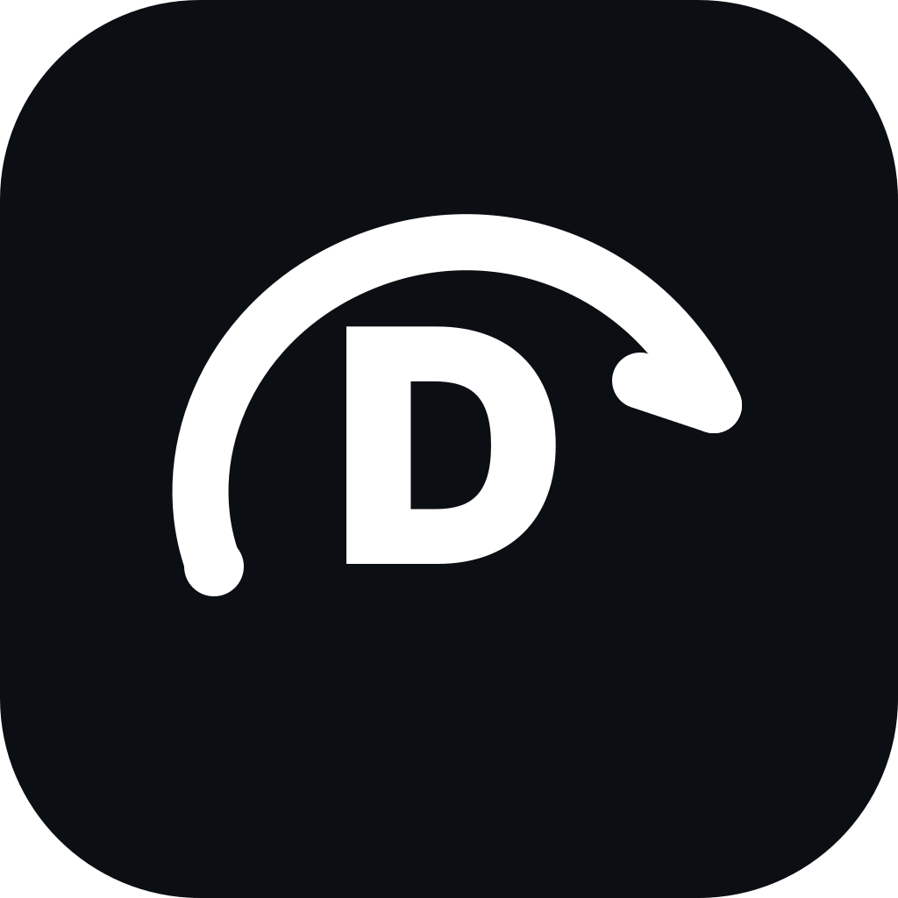

Dashboard
Overview grid, status, and resolve-next work.
Deluno icon pack v2
Feature icons should say what the item actually is. App icons should be tested separately for Windows, browser favicon, taskbar, and tray because one detailed mark will not always survive at 16-32px.

Feature/navigation icons
These should become normal UI line icons, not full-color app-logo marks.
Overview grid, status, and resolve-next work.
Folders, storage paths, and library roots.
Reusable recipe stack for quality, releases, and upgrades.
Target/cutoff quality and upgrade goal.
Minimum and maximum file-size boundaries.
Preference score for source, codec, HDR, language, and groups.
Default folders and destination exceptions.
Indexer and download-client signal path.
Downloads, transfer state, and import-ready items.
Timeline of searches, grabs, imports, and recovery.
Upcoming episodes, releases, and retry windows.
Scheduled searches, upgrades, retries, and recovery loops.
Movie library and title detail surfaces.
Series, episodes, seasons, and upcoming shows.
Find titles and assign library/plan at add time.
Settings, health, backups, updates, and diagnostics.
Windows, browser, taskbar choices
Recommended: primary route for Windows, minimal route for browser/favicon, mono route for taskbar/tray.
Best broad app identity: Deluno routes, decides, and organizes media.

More explicitly media-library/folder oriented. Good, but narrower than the primary mark.

Strong fit for Media Plans, but reads more like a feature icon than the whole app.

Best for connected automation. Useful as an internal connection icon direction.

Simplified route mark. Best where the browser tab only gives us 16-32px.

High-contrast one-color mark for tray, shell, and small pinned contexts.
Recommended platform set
Detailed primary mark for `.ico` large sizes.
Simpler mark for 16/32px tabs.
High-contrast mono mark for small shell contexts.
| Context | Best choice | Why |
|---|---|---|
| Windows app icon | Route Primary | Detailed enough to feel premium at 256/512/1024, still clear at 32. |
| Browser favicon | Minimal Favicon | Fewer lines survive at 16px and stay recognizable in browser tabs. |
| Taskbar | Route Primary or Mono | Use primary for pinned app; use mono where the shell needs high contrast. |
| System tray | Taskbar Mono | Smallest context; reduce color and detail. |
| Internal feature icons | Specific line icons | Dashboard, Media Plans, Quality, Size, Scoring, Destinations, etc. should each have their own shape. |